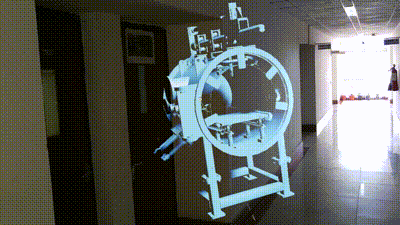

Digital Twin of a Thermo-Vacuum Chamber.
ISRO's first digital twin for a thermo-vacuum chamber and quantum payload. It brought real-time monitoring, predictive maintenance, and AR/VR diagnostics to the testing of space hardware.

Space Applications Centre, ISRO
HoloLens · Oculus
Creo · Blender · IoT · AR/VR/XR
The brief.
The paper covers a Digital Twin (DT) I built for a thermo-vacuum chamber, the rig ISRO uses to test space hardware under simulated extreme conditions. The DT was meant to give engineers real-time monitoring, diagnostics, and predictive maintenance, which makes the testing safer, faster, and cheaper.
By pulling together augmented reality (AR) and IoT, the DT shows live data and 3D views on top of the real chamber, so engineers and technicians can debug a test without standing over the hardware.
Methodology.
3D Modeling
I built a detailed 3D model of the thermo-vac chamber in Creo Parametric.
Optimization
I cleaned the model up in Blender, cutting polygon count and dropping the parts that did not matter so it would render well.
Data Integration
Live data from the physical chamber is read and processed in Unity3D. It starts on a web-based monitoring page, and I convert it from HTML to JSON so it is easier to work with.
Augmentation in AR/VR
The processed data is overlaid onto the DT in an AR view on mobile and Windows, using the Mixed Reality Toolkit (MRTK) in Unity. The values update live and you can interact with them.
Cross-Platform Deployment
The DT runs on a range of devices: mobile, desktop, and AR/VR headsets like the Microsoft HoloLens and Oculus, so people can reach it however they work.
Results.
The DT made a real difference to how the chamber gets tested. AR and voice commands let engineers read and interact with the system without fighting the interface.
It gave live readouts of the parameters that matter, like temperature and pressure, so problems got caught and fixed fast, which keeps the space hardware safe. Having the data right there in front of them helped engineers decide quickly.
The project also showed you can build advanced testing tools cheaply by writing the software in-house and using off-the-shelf AR and IoT tools. That makes it affordable and easy to scale to other rigs. Overall, it is a clear case for digital twins making space-hardware testing more efficient, safer, and cheaper.
Build artifacts.
.png)
.png)
